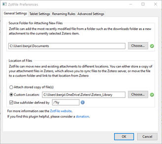
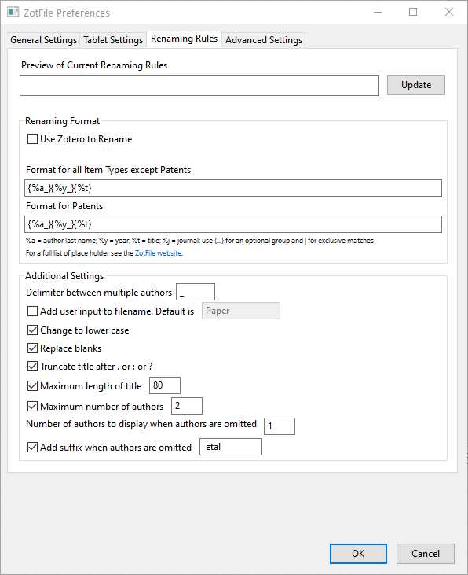
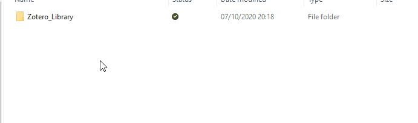
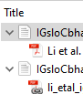

Useful plugins
Zotero has a great community, actively developing Addons/Plugins that add many improvements. You can find a list of Plugins on the official website.
An essential addon that helps organize and store documents is ZotFile, maintained by Joscha Legewie.
- Visit the official website and download the plugin (if you use Firefox, you will need to right-click on Download and choose Save Link as…)
- Install the downloaded .xpi file & restart Zotero (Short video explanation)
Tools – Addons – Gear Wheel – Install Addon from File
{kind=link}
ZotFile
Open the preferences of ZotFile
Tools – ZotFile Preferences…
General Settings

Source Folder for Attaching New Files
If you want to watch a folder and add the content automatically (I rarely use this feature, though)
Location of Files
Change to Custom Location and use the same path as for Links Attachment Base Directory! (changed in the previous chapter about syncing)
If you want to organize the documents in the directory, you can tick the Use subfolder defined by box. In my case, `/% y' creates subfolders by year.
Renaming Rules

In this tab, you can specify how to rename your documents on your hard drive to name them outside of Zotero conveniently.
I prefer to use subfolders to organize the documents by year and the naming convention AUTHOR NAME_YEAR_TITLE.
To do so, you need to change Format for all Item Types except Patents to {%a_}{%y_}{%t}.
Resulting in the following structure outside of Zotero:

Workflow
Wrapping up, the workflow is now as follows:
Add a document to Zotero - The document will automatically be moved to your destination folder, sorted by year, and renamed.
Additionally, an entry in Zotero is created, which links to the document.
If everything works correctly, you should see a chain next to the document, which indicates that the document was moved to the destination folder. If Zotero doesn't do it automatically, you can right-click on the document and choose Manage Attachments -- Rename Attachments.

In the example to your left, you can see that the first entry is not linked correctly. After running Manage Attachments -- Rename Attachments the document was moved and now shows the correct chain symbol.
Afterward, you can delete the original document from your download folder (or where you initially saved it).
Click here if you want to learn even more about linked attachments
Stored files are, by default, stored within the Zotero data directory. If you add a stored file from a file on your computer, the file is copied to the Zotero data directory. Zotero will automatically manage them, including deleting them if you delete the attachment item in Zotero. If you use file syncing, Zotero will automatically sync stored files between devices and make them available in your online library on zotero.org. However, that can quickly fill up your online storage; therefore, I introduced the alternative storage location offline or on your own cloud/server on the previous page.
With linked files, Zotero only stores a link to the original file's location on your computer. Linked files were not introduced by Zotero itself but by the previously installed Plugin ZotFile. The advantage is the previously discussed possibility of using your own server, renaming rules, etc. On the downside, however, you must manually delete files outside of Zotero. If you ever want to delete a document, you have to delete the entry in Zotero AND the document saved in the destination folder.
Other Plugins
As mentioned, Zotero has a big community and offers multiple Plugins to improve its functionality. Please check the official website for an overview of Plugins. Since it highly depends on your personal preference, I will not give detailed explanations about the other Plugins. Please feel free to contact me if you have any questions.
Warning
Make sure that the plugin you want to use is compatible with your version of Zotero!
Plugins I use
ZotFile
A Zotero plugin to manage your attachments (described above).
Better BibTex
A Plugin for better Latex support (already discussed in an earlier chapter).
Night for Zotero A dark mode for Zotero.
zotero-auto-index
Automatically keeps your attachments indexed.
zotero-date-from-last-modified
If the date field is not filled, and the URL field is, fill the date from URL last-modified automatically after an item changes.
Zotero DOI Manager
The addon can auto-fetch DOI names for journal articles using the CrossRef API and look up shortDOI.
Zotero Scholar Citations
The addon automatically fetches the numbers of citations of your Zotero items from Google Scholar and makes it possible to sort your items accordingly. The plugin is arguable of limited use, but I like web scraping (don't hate me!).
Zotero Storage Scanner
A Zotero plugin to remove broken & duplicate attachment links in your bibliography.